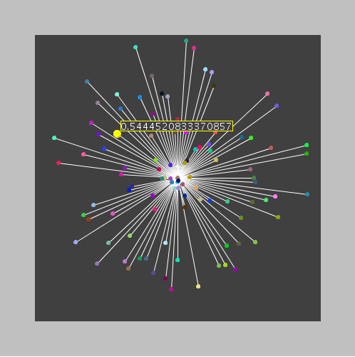

Dandelion Plot
It is a multi-dimensional plot that looks like a dandelion.
 |
 |
Example:
import java.awt.Color;
import java.util.Random;
import plots.SimpleDandelionPlot;
import processing.core.PApplet;
import util.PickeableObjectEvent;
import util.PickeableObjectListener;
public class SimpleDandelionExample extends PApplet implements PickeableObjectListener{
private static final long serialVersionUID = 1L;
private SimpleDandelionPlot plot;
public void setup()
{
plot = new SimpleDandelionPlot(this, 50, 50, 400);
plot.setRange(0, 1);
int numOfValues = 100;
double[] data = new double[numOfValues];
int[] colors = new int[numOfValues];
String[] text = new String[numOfValues];
Random r = new Random();
for(int i = 0; i < numOfValues; i++)
{
data[i] = r.nextDouble();
Color c = new Color(r.nextFloat(), r.nextFloat(), r.nextFloat());
colors[i] = c.getRGB();
text[i] = "Text " + colors[i];
}
try {
plot.setNodeColors(colors);
plot.setNodesText(text);
plot.addListener(this);
plot.renderNodesData(true);
plot.setData(data);
} catch (Exception e) {
// TODO Auto-generated catch block
e.printStackTrace();
}
size(500, 500);
}
public void draw()
{
if(plot.mouseIsOverFeedback())
{
background(Color.LIGHT_GRAY.getRGB());
}
plot.drawObject();
}
@Override
public void eventTriggered(PickeableObjectEvent event){
System.out.println("message from " + event.getSource().getClass().getName() + " id: " + event.getSource().getId() + " event: " + event.getEventType());
}
}